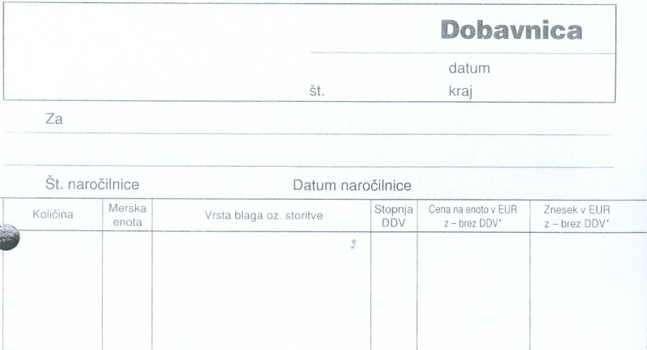
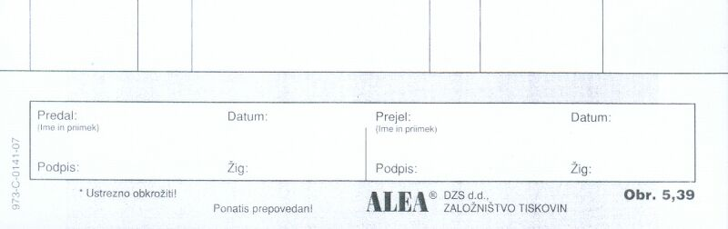

|
Dobavnica je obrazec, s katerim neka organizacija, ki dobavi drugi organizaciji material ali opremo, zabeleži in potrdi, da je naroèeno opremo ali material dejansko predala oziroma dobavila pristojni osebi tiste druge organizacije. Druga organizacija z dobavnico potrdi, da je naroèeno blago resnièno in dejansko prejela. Denimo, da potrebuje raèunalniška uèilnica srednje šole ZUIM nov tiskalnik. V ta namen je pristojni zaposleni na ZUIM že izpolnil naroèilnico (glej uèno enoto "Naroèilnica (35)") in jo izstavil organizaciji, ki bo srednji šoli ta tiskalnik prodala. Ta organizacija bi lahko bila specializirana trgovina "Emisija" na Duplici. V naslednjem koraku se lahko zgodita najmanj dva razlièna dogodka: 1. Nekdo od zaposlenih gre lahko iskat naroèeni tiskalnik v Emisijo in ga prevzame. 2. Nekdo od zaposlenih v Emisiji pripelje tiskalnik v ZUIM Kamnik in ga izroèi pristojnemu na srednji šoli. V obeh opisanih primerih pa morajo tisti, ki sodelujejo pri prevzemu tiskalnika, izpolniti poseben obrazec. Ta obrazec se imenuje dobavnica. Oglejmo si nekaj podatkov v splošni dobavnici: 1. Številka dobavnice - obièajno gre za vrstno številko, po kateri razvršèamo in razlikujemo dobavnice med seboj. 2. Datum in kraj - ko in kjer je dobavnica zapisana. 3. Za - semkaj vpišemo ime in sedež organizacije, ki je blago naroèila in ga bo sedaj prejela. 4. Številka naroèilnice - je številka tiste naroèilnice, na podlagi katere se bo izvedla dobava, ki jo ta dobavnica dokumentira. 5. Datum naroèilnice - je datum tiste naroèilnice, na podlagi katere se bo izvedla dobava, ki jo ta dobavnica dokumentira. 6. Predal (Ime in priimek) - èitljivo zapisano ime osebe, ki je dobavljeno blago izdala. 7. Datum: - datum predaje ali oddaje blaga. 8. Predal (Ime in priimek) - èitljivo zapisano ime osebe, ki je dobavljeno blago prejela. 9. Datum: - datum prejetja blaga. 10. Žig: - peèat organizacije, ki je blago prejela in organizacije, ki je blago dobavila.  Slika 1: Glava splošnega obrazca za dobavnico.  Slika 2: Noga splošnega obrazca za dobavnico. 1. Vprašanja za usmerjanje pozornosti in usvajanje novih besed: 1. Kako se imenuje obrazec, s pomoèjo katerega dve organizaciji potrdita predajo oziroma prejem naroèenega blaga? 2. Naštej in opiši podatke, ki jih vsebuje preglednica dobavnice. 3. Kakšen je naziv dobavljenega blaga v primeru iz besedila te uène enote? 4. Kolikšna je dobavljena kolièina blaga v primeru iz besedila te uène enote? 5. Kakšna je merska enota dobavljenega blaga v primeru iz besedila te uène enote? 6. Kakšna je tipska oznaka obrazca za dobavnico, ki smo jo spoznali v tej uèni enoti? 7. Kdo je izdajatelj in založnik splošnega obrazca za dobavnico, ki ga vidimo na sliki v tej uèni enoti? 2. Zapiši od ene do pet kljuènih besed, ki povzemajo vsebino te uène enote. 3. Vprašanja za razmislek, ponavljanje in povezovanje z lastno izkušnjo: 1. Kdo bi se lahko podpisal v okencu "Predal:" dobavnice za primer, ki smo ga spoznali v tej uèni enoti? 2. Kdo bi se lahko podpisal v okencu "Prejel:" zahtevnice za primer, ki smo ga spoznali v tej uèni enoti? 4. Domaèa naloga: V enem do petih stavkih zapiši, kaj ti je v tej uèni enoti najbolj ostalo v spominu. |